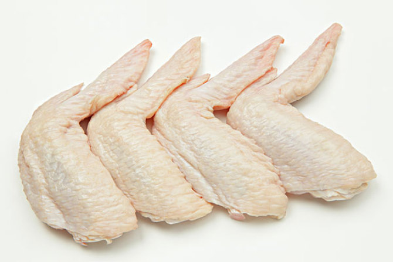

鸡翅
鸡翅也称“鸡翼”“大转弯”，即鸡的翅膀，鸡翅肉少， 皮富胶质，是整个鸡身最为鲜嫩可口的部位之一。肉少，皮富胶质。又分“鸡膀”“膀尖”两种。 鸡膀，连接鸡体至鸡翅的第一关节处，肉质较多。

功效
鸡翅有温中益气、补精添髓、强腰健胃等功效，鸡中翅相对翅尖和翅根来说， 鸡翅的胶原蛋白含量丰富，对于保持皮肤光泽、增强皮肤弹性均有好处。

营养价值
鸡翅含有丰富的维C和维E，还有大量蛋白质真，有助于维持免疫系统功能正常， 提高人体免疫力;鸡翅中含有人体所需的磷脂类，是脂肪和磷脂的主要来源， 为人体的新陈代谢提供热量;鸡翅中含有的胶原蛋白非常丰富，对于增加皮肤的弹性和光泽有很大的功效，还可以强健血管。
适宜人群
一般人群可食用鸡翅，患有热毒疖肿、高血压、血脂偏高、胆囊炎、胆石症患者忌食鸡翅。